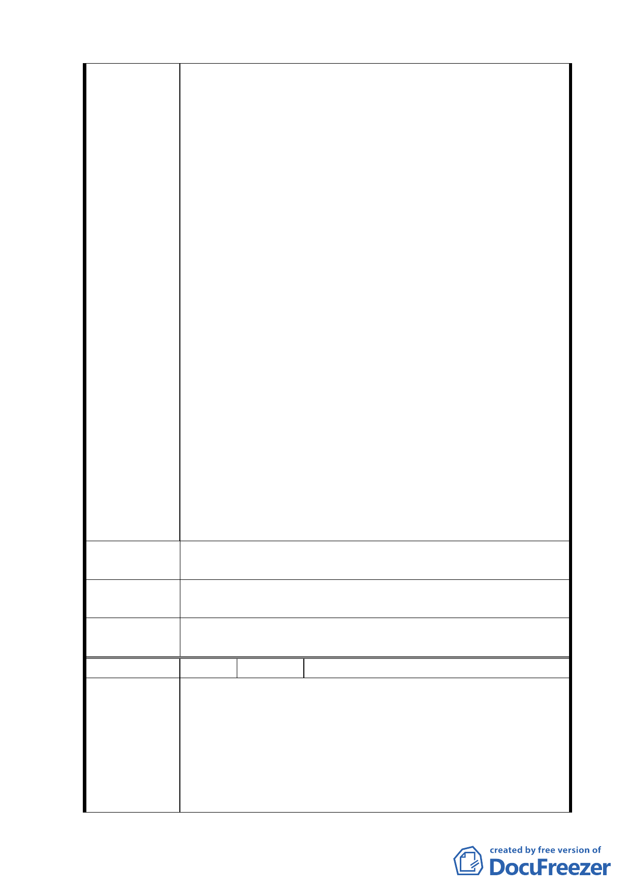

外交通運輸連絡主要道路，而造福老泉里里民及前揭二
校師生。
三、計畫案將陳情人等土地列為保護區，其不合理及嚴重損
害陳情人等權益如下：
（一）該計畫案之範圍為老泉街兩側，其地目原為農業用
地，經該計畫規劃為商業區，唯獨陳情人等所有土地現
為農業用地；該計畫卻將其規劃為保護區，嚴重損害陳
情人等權益。
（二）都市計畫之辦理，無非在提昇土地之利用價值，造福
鄉梓。陳情人等所有土地與鄰近之土地原為農業用地，
經該計畫之規劃後皆為商業區；唯獨陳情人等所有土地
變更規劃為保護區，其心叵測，手段更令人不能茍同，
損害陳情人等權益甚鉅。
（三）陳情人等所有土地現為農業用地，除可耕作外，尚可
搭建農舍儲存耕具、肥料、休息、躲雨等多元化用途。
該案計畫將陳情人等所有土地列為保護區，其僅能從事
農作一途，無法多元化運用，嚴重影響陳情人等權益。
（四）陳情人等所有二分之一土地數十年至今，為無償提供
該案老泉里里民出入及農產品等、東山高中及道生幼稚
園上學放學活動等對外交通運輸連絡主要道路之用，造
福老泉里里民及前揭二校師生。而該計畫案是否曾做過
現況調查檢討及分析？試問：使用數十年至今，現仍為
老泉里里民出入及農產品等、東山高中及道生幼稚園上
學放學活動等對外交通運輸連絡道路用地，竟然列入保
護區，是否還可耕作，請問合理嗎？
建議辦法
請臺北市政府重新檢討本案陳情人等所有土地相關部份，以
維護陳情人等權益。
專 案 小 組 同意發展局所研議，將本保護區調整為道路用地及綠地，並
審 查 結 論 納入區段徵收開發。
委員會決
議
同專案小組審查結論。
編 號 １０ 陳情人 臺北市私立東山高級中學
一、土地標示：文山區老泉段四小段四七一、四七四、四七
五、四七六、四七七、四七八、四七九地號。
二、學校為財團法人，學校用地乃供學生活動教學使用，不
陳情理由
能比照一般住商用地徵收校地。
三、本校四七一等七筆校地，早在民國八十五年迄今，多次
申請專案變更為學校用地，之後依市政府八十八年十二
月十六日北市都二字第八八二二六五０四００號函復
一一